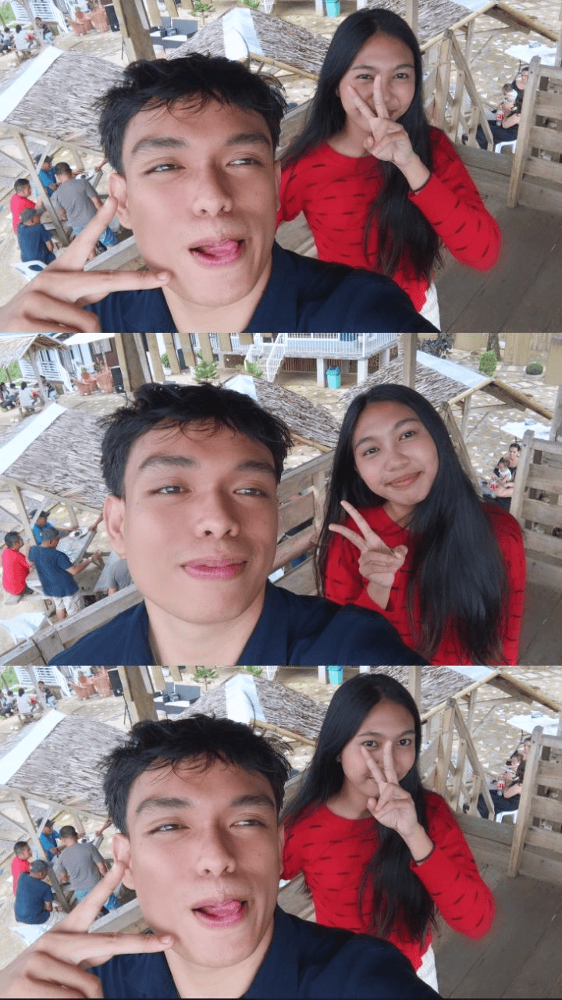
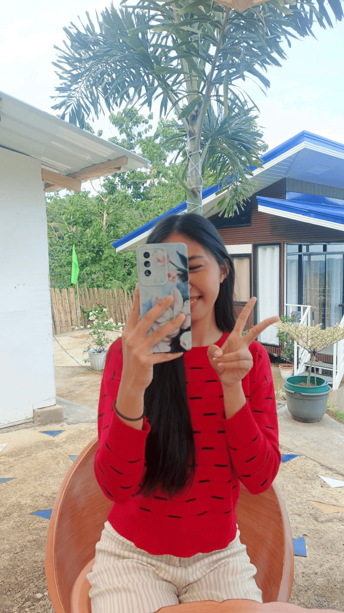
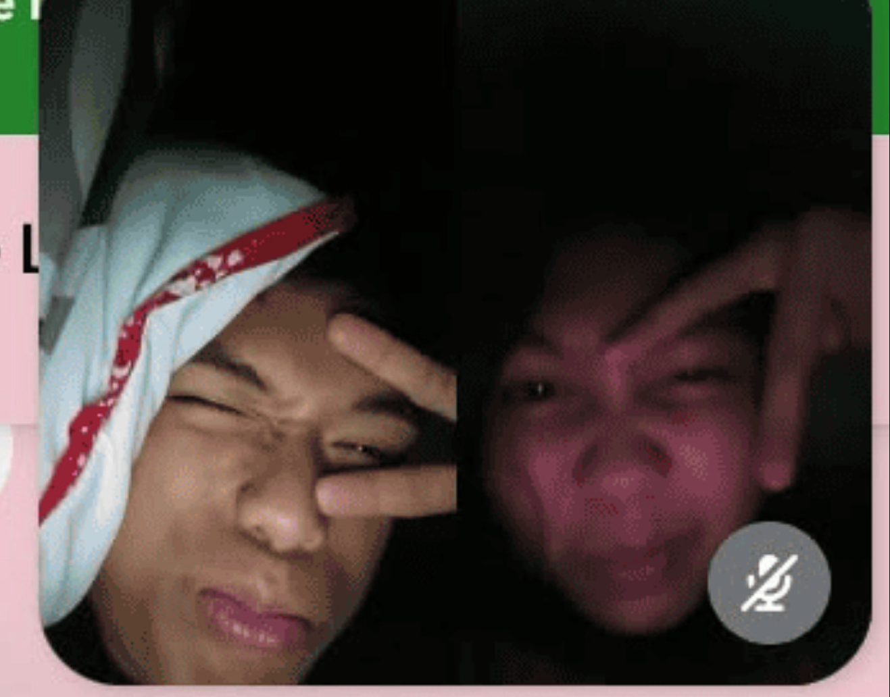

A Little Message For You 💙
Happy birthday Rose Lynie!
Una sa tanan, HAPPY BIRTHDAY GYUD NIMO! Finally, 18 na ka. Adult na gyud ka, pero para nako, ikaw gihapon tong cute nga girl nga ganahan nako i-chika, samokon, ug usahay tan-awon lang from a distance HAHAHAHA Bitaw, jokes aside, I’m really happy nga nakaabot ka ani nga age. And honestly, I’m even happier nga nakaila ko nimo. Kabalo ka, funny kaayo kay wala man gyud ko nag-expect nga mahimong close ta. At first, ordinary friend lang unta, pero somewhere along the way, nahimo ka nga someone special sa ako. And I don't know if you notice it, pero naa gyud kay something nga makapadani sa imong presence. Kanang bisag simple ra imong buhaton, somehow, ma-notice gihapon nako. Mao siguro nga usahay maglibog ko kung girl best friend ba gyud akong tawag nimo or girl nga akong sge ug samokon sa call pero akong gitago-tago lang ni kay maulaw sya mag pakita sa iyahang nawonh chrizz lang HAHAHAHA Pero seriously, I really appreciate you.
I appreciate your personality, your smile, your way of talking, and even those little things about you nga basin wala ka kabantay pero somehow, cute kaayo para nako. And yes, basin moingon ka nga OA ra kaayo ko karon kay birthday nimo. Birthday privilege nimo ni. Pwede ko mahimong sweet karon. Pero I hope you know nga every word I’m saying here is sincere. I want you to know nga you deserve to be happy. You deserve people who will appreciate you, respect you, listen to you, and stay even when things aren't easy. And if ever naa kay bad days, please don't think nga kinahanglan nimo itago tanan. You can always talk to me. If you're sad, chika ta. If you're stressed, paminawon tika. If you're happy, I want to hear about it. If you have random stories, isulti lang nako. If you're bored…
Well, naa man ko. Samokon tika HAHAHA And if ever you're looking for someone to make you smile, I can volunteer HAHAHA But honestly, one thing I really admire about you is that you don't need to try too hard to be special You're just you And somehow, that's already enough to make someone like me smile whenever I see you I know we're still new friends, and maybe I shouldn't be saying too much, but I don't want to miss the chance to tell you how much I appreciate having you in my life Because sometimes, people come into our lives unexpectedly, and before we even realize it, they become someone we don't want to lose You're becoming that kind of person to me. And maybe that's why I care about our friendship more than I expected. Maybe that's also why I sometimes get a little excited whenever I see your message Maybe that's why I sometimes smile at my phone like an idiot joke lang bya ahh Ikaw ra gyud ang reason nganong usahay buang-buang ko'g smile sa cellphone HAHAHA But don't let that get to your head, okay?
Although, You are pretty, so maybe you can let it get to your head a little On your 18th birthday, I hope you realize how beautiful your life can become You're still so young, and you have so many things ahead of you There will be people you'll meet, places you'll go, dreams you'll chase, mistakes you'll make, and memories you'll create I hope that through everything, you never forget your worth Don't settle for people who make you question whether you're enough You deserve someone who makes you feel appreciated without making you beg for it Someone who chooses you Someone who listens to you Someone who makes you laugh Someone who makes you feel safe Someone who looks at you and thinks She's worth keeping
And honestly… I hope someday you find someone like that. Although… kung ako gani, pwede ra pud HAHAHAHA Okay, okay, joke lang! HAHAHA Unless…
Amping pirmi, okay? Ayaw kalimot nga naa ra ko diri para nimo. No matter what happens, I will always be happy to support you, cheer for you, and remind you that you are never alone. Your dreams matter, your happiness matters, and I hope you always remember how worthy you are of all the good things life has to offer.
Ug basin... naa koy gamay nga feelings nga lisod itago HUHUHUHU
Anyway, I hope you achieve all the dreams you've been praying for I hope your future is filled with success I hope your family stays healthy I hope you meet people who genuinely care about you I hope you experience the kind of happiness that makes you forget about all the bad days you've had And I hope that someday, when you're older, you'll look back at your 18th birthday and remember how happy you were Maybe you'll even remember this long message from that one guy who was supposedly just your “samokan na friend HAHHAHHA” And if you do remember it, I hope you smile Because somewhere in this very long message is a guy who genuinely cares about you more than he probably should I don't know what the future holds for us Maybe we'll stay best friends Maybe we'll become even closer Maybe life will take us in different directions Or maybe… something unexpected might happen. Who knows, right?
For now, I'm just happy that I get to call you my girlbestfriend if ever? hehhe And I'm thankful that I met you So please, don't ever think you're just another person in my life You're not You're someone I genuinely want to see happy Someone I want to see succeed Someone I want to see achieve her dreams And someone I wouldn't mind having in my life for a very, very long time So again Happy 18th Birthday, sa pretty girl nako na friend na sapoton na si Lynie Yes, I said pretty girl Don't get too kilig HAHAHAHA Enjoy your day Enjoy being 18 Take lots of pictures Laugh a lot Make memories And please, smile today.
Although, honestly Mas ganahan ko kung ako ang reason sa imong smile. And before I end this message, I just want to say one last thing Thank you for coming into my life Thank you for being my friend. Thank you for all the little conversations and moments that we've shared And thank you for being someone who makes ordinary days feel a little more special I don't know if you realize it, but you're already important to me Maybe more important than you think So if someday you wonder if there's someone who's quietly rooting for you, cheering for you, and hoping you achieve everything you want I'm here. Your friend na samokan HAHHHA. Your listener. Your number-one supporter. And maybe your secret admirer chrizz lang HAHAHAHA.
I hope this year brings you more reasons to smile, more dreams to chase, and more love to feel than you ever imagined. Keep shining, keep being you, and always remember that someone is quietly so happy you exist. Okay, enough na kay basin ma-fall ka nako HAHHAHAHH But seriously, happy birthday. May God bless you with a beautiful life, protect you wherever you go, guide you in every decision, and give you the happiness that you truly deserve Stay beautiful Stay kind Stay the girl that you are And please… don't change too much, kay basin samot ko ma-fall huhu Happy 18th birthday sa imoha Lynie Enjoy your day, pretty. You deserve it. 18 ka na, pero bawal gihapon ko nimo kalimtan.
Our Little Memories 📸



Why You’re So Special ✨
18 Sweet Wishes 🎂
I hope your wish comes true. You deserve it.
Okay... one last thing.
You're not just my friend anymore...
Wait… naa pa diay koy last surprise para nimo. Ug before gyud ko mo-end ani nga message, naa koy last surprise para nimo. Karon, wala ni joke. Gusto lang gyud nako nga basahon nimo ni hinay-hinay Salamat kay nahimo kang part sa akong life, bisan bag-o pa ta nagkaila. Salamat sa friendship nga wala gyud nako gi-expect nga mahitabo. Salamat sa atong mga storya, mga katawa, random nga chika, ug bisan sa mga gagmay nga moments nga basin para nimo ordinaryo ra, pero para nako, memories na gihapon Basin wala ka kabantay, pero usahay, ang imong presence alone kay makapa-better sa adlaw sa usa ka tawo Ug ako, usa ko ana Dili ko kabalo kung asa ta dad-on sa life puhon. Basin mas mahimong close pa ta, basin mahimong busy ta sa atong tagsa-tagsa ka kinabuhi, or basin puhon, magkatawa ta kung mahinumdoman nato kung giunsa ba gyud ta pagkahimong friends Pero bisan unsa pa mahitabo sa future, gusto nako nga mahibaw-an nimo nga thankful gyud ko nga nakaila ko nimo Ug kung moabot ang panahon nga mahimong lisod ang life para nimo, hinaot nga mahinumdoman nimo ang girl nga nag-18 karon Hinumdumi nga strong ka Hinumdumi nga naa kay mga tawo nga nahigugma ug nag-care nimo Hinumdumi nga naa kay mga tawo nga nagtuo nimo Ug hinumdumi nga dili kinahanglan perfect ka para ma-deserve nimo ang mga nindot nga butang sa life Deserve nimo mahimong happy bisan sa mga adlaw nga feeling nimo dili ka deserving sa happiness Deserve nimo ang kindness bisan usahay ikaw mismo kay harsh kaayo sa imong kaugalingon Ug deserve nimo ang mga tawo nga mopabilin, dili lang kung okay ang tanan, pero labi na kung dili okay ang tanan Mao na akong wish para nimo as your friend: hinaot nga dili nimo mawala ang maayong heart nga naa nimo Padayon nga mahimong kind Padayon nga magdamgo Padayon nga mukatawa Padayon nga mutuo sa imong kaugalingon Ug bisag unsa pa kadako imong maabot puhon, hinaot nga dili nimo makalimtan ang simple nga version sa imong kaugalingon nga gusto ra mahimong happy ug gusto pud makahatag ug happiness sa mga tawo sa iyang palibot Ug kung puhon maabot na nimo tanan nga imong gipangandoy, hinaot nga mahinumdoman nimo nga naa'y usa ka friend nga hilom lang nga nag-support ug nag-cheer para nimo gikan pa sa sinugdanan Ako to Basin dili nako pirmi isulti Basin mas hilig ko mag-joke-joke. Basin usahay samokon tika AHHAHHAHAHAH Pero seryoso, gusto gyud nako makita ka nga mag-succeed Gusto nako makita ka nga happy Gusto nako makita ka nga mahimong person nga gusto nimo mahimong puhon Ug bisan unsa pa ang mahitabo sa future, thankful gihapon ko nga sa usa ka point sa akong life, nakaila ko ug someone like you. Mao ni akong last birthday wish para nimo Hinaot nga ang sunod nga mga chapter sa imong life mas mahimong malinawon ug mas nindot kaysa sa mga chapter nga imong naagian. Hinaot nga hatagan ka ug courage nga sundon imong mga dreams, strength nga atubangon imong mga struggles, ug mga tawo nga tinuod gyud nga maka-appreciate sa kung kinsa ka Ug kung puhon malibog ka sa imong life, hinaot nga mahinumdoman nimo ni Dili kinahanglan nga kabalo na ka sa tanan karon. 18 pa ka. Bag-o pa gyud nagsugod imong storya So go and live it Masayop ka Makat-on ka Mukatawa ka Maghimo ka ug memories I-enjoy nimo imong life Ug labaw sa tanan pagmalipayon Salamat kay nagpabilin kang ikaw. Salamat kay nahimo kang friend nako. Ug salamat kay nahimo kang usa sa mga tawo nga thankful kaayo ko nga akong nakaila Happy birthday. Welcome to 18 And one last thing Kung puhon huna huna ka balik ani nga message, unta nga dili lang nimo mahinumdoman ang mga words nga akong gisulti. unta nga mahinumdoman nimo nga sa imong 18th birthday, naa'y usa ka friend nga tinuod gyud nga nalipay nga naa ka sa iyang life. And before gyud nako tapuson ni nga message, naa pa koy usa ka last surprise para nimo Wala lang gyud ko kabalo unsaon pag-ingon kay basin mausab ang atong friendship, or basin mahimong awkward na ta after ani. Pero gusto nako nga sa imong special day, mahimong honest ko nimo sa akong gibati Kabalo ka, sa sinugdanan, happy ra gyud ko nga nahimo kang friend nako. Ganahan ko makig-chika nimo, malingaw ko sa atong mga conversation, ug malipay ko bisan sa mga simple nga moments nga atong ma-share Pero sa kadugayan, nakabantay ko nga lahi na diay akong gibati para nimo Kanang usahay, makadawat lang kog message gikan nimo, makapahiyom na ko. Kanang maghulat ko nga maka-chika tika, ug usahay, bisan simple ra imong isulti, mahinumdoman gihapon nako Mao nang gusto na gyud nako isulti ang tinuod Lynie, naa koy crush nimo. Ikaw gyud akong ganahan. HAHAHAHA, mao na gyud ni. Wala na koy lusot! Pero bitaw, gusto nako nga masabtan nimo nga dili ni nako gisulti aron pugson ka nga ganahan pud ka nako. Dili pud ko nag-expect nga kinahanglan nimo tubagon dayon akong feelings. Kabalo ko nga naa kay mga ginikanan nga strikto, ug nasabtan nako nga naa kay mga butang nga kinahanglan nimo respetuhon ug mga limitasyon nga kinahanglan sundon. Dili nako gusto nga mahimong hinungdan sa imong problema sa inyong balay, ug dili pud nako gusto nga ibutang tika sa sitwasyon nga kinahanglan ka mamili tali sa imong family ug sa atong friendship I respect you, your family, and your boundaries Dili tika hangyoon nga magtago-tago para lang nako, ug dili tika pugson nga buhaton ang mga butang nga dili ka komportable. Kung friendship lang sa ang kaya nimo karon, okay ra gyud nako. Mas importante para nako nga komportable ka ug malinawon imong hunahuna kaysa magdali ta sa usa ka butang nga dili pa angay sa panahon Dili man kinahanglan nga magdali ang tanan, di ba? Usahay, mas nindot nga hinay-hinay lang, magkaila pa ta pag-ayo, magtinahuray, ug pasagdan ang panahon nga ipakita kung asa ta padulong Dili ko makasaad nga perfect ko nga tawo, pero makasaad ko nga maningkamot ko nga mahimong sincere ug respetado sa imong feelings. Dili nako gusto nga mahimong pressure ang akong pagkagusto nimo. Gusto nako nga kung makigstorya ka nako, malipay ka ug komportable ka, dili kay mabug-atan ka sa akong gibati Ug kung dili pa gyud ka ready sa bisan unsang romantic nga butang, respetuhon nako na. Kay para nako, ang tinuod nga pagkagusto sa usa ka tawo dili lang kay gusto nimo nga mahimong imoha siya. Apil pud ana ang pagrespeto sa iyang panahon, iyang desisyon, ug sa mga butang nga importante sa iyang kinabuhi Mao nang dili tika pagadali-on. Dili kinahanglan nga karon dayon naa nay label ang atong friendship. Malipay gihapon ko nga makaila pa tika ug mahimong part sa imong life isip friend Pero syempre, dili nako ikalimod nga malipay ko kung puhon, kung ready na ka ug kung okay ra sa imong situation, hatagan pud ko nimo ug chance nga mahimong mas special pa kaysa kuya2 HAHAHAHA For now, gusto lang nako nga ma-enjoy nimo imong 18th birthday. Amping pirmi, pag-focus sa imong dreams, paminawa ang mga tambag sa imong family, ug ayaw kalimti nga naa kay kaugalingong future nga angay nimo paningkamotan Ug bisan unsa pa ang imong tubag sa akong confession, thankful gihapon ko nga nakaila ko nimo And again Happy 18th birthday sa girl nga akong giila isip maldita na friend, pero sa tinuod lang, naa na diay koy crush Thank you kay nahimo kang part sa akong life. I hope nga daghan pa ta'g memories nga buhaton, daghan pa ta'g kataw-an, ug daghan pa ta'g mahibaw-an bahin sa usag usa And who knows? Basin ang panahon maoy motubag sa mga pangutana nga dili pa nato matubag karon Pero for now, walay pressure, walay pagdali, ug walay kinahanglan nga usbon dayon Gusto lang tika nga mahibaw-an nga ganahan ko nimo, sincere ko sa akong gibati, ug respetuhon nako kung unsa man ang imong desisyon Happy birthday, pretty girl. Amping kanunay, ug hinaot nga mahimong nindot ug malipayon ang imong bag-ong chapter sa life And yes, surprise gyud ni kay ang imong kuya2 nga sige ra'g joke-joke, ni-confess na gyud sa katapusan HAHAHAHA I like you, and I'm happy nga nakaila ko nimo. That's my little birthday surprise for you 🤍